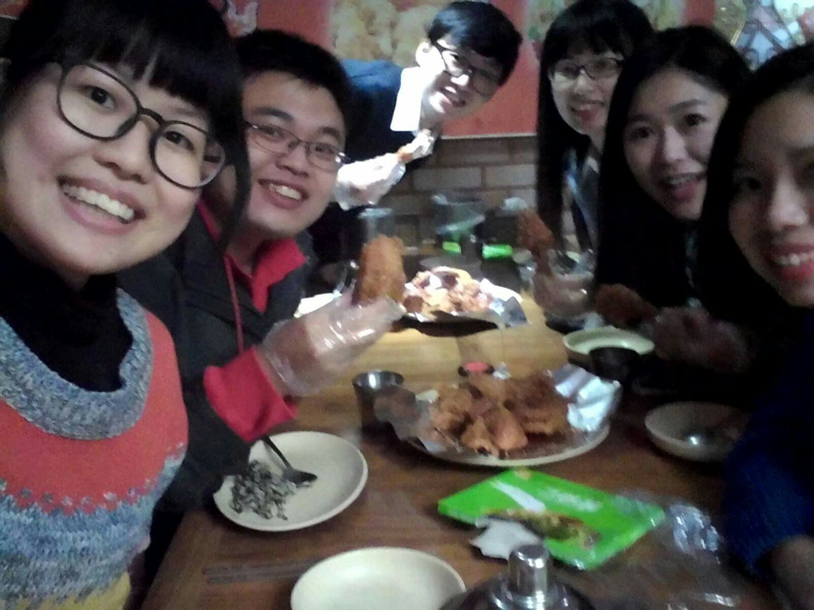
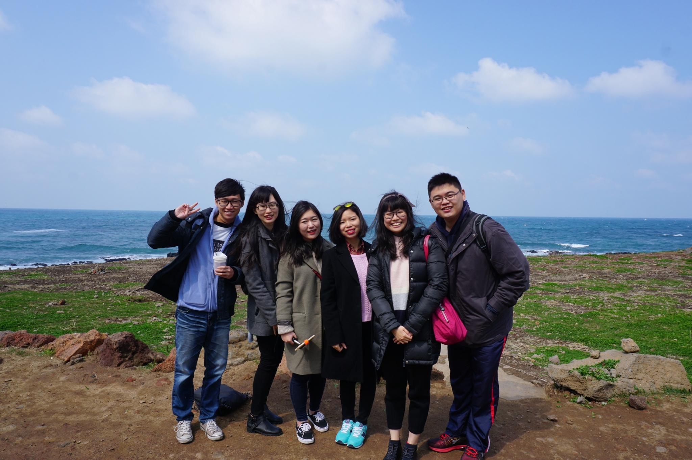
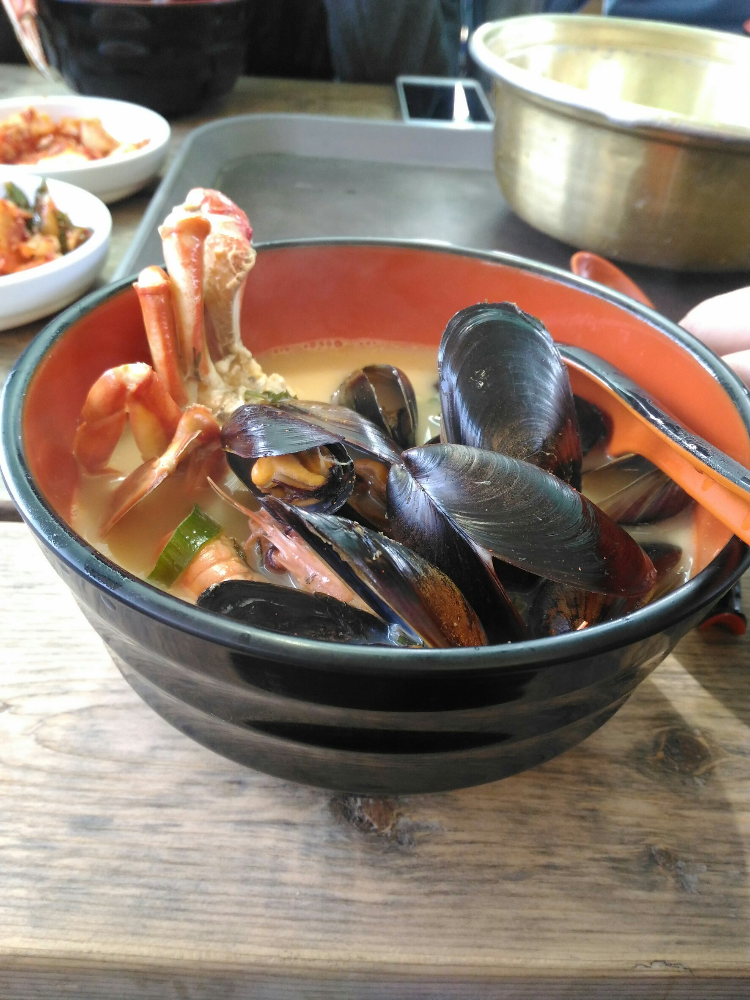
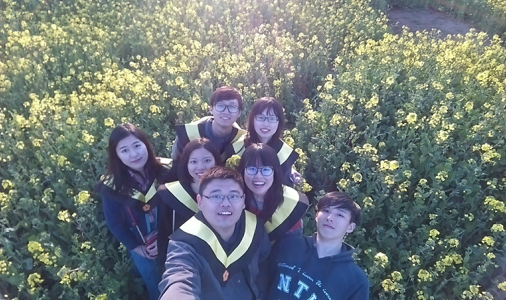
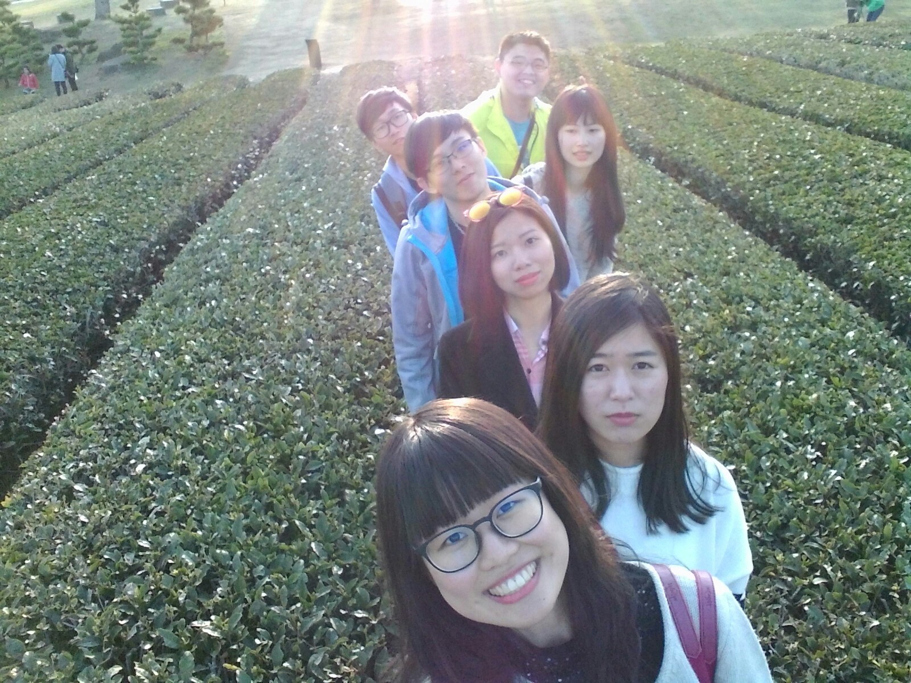

0331松山機場→上海→濟州島
3/31中午12點的飛機，從松山機場飛往上海，再轉機到濟州島，由於上海的班機延誤一個多小時，我們抵達飯店已經是晚上，第一餐：韓國炸雞配啤酒，慶祝我們的畢業旅行開始！
0401#涯月海岸#中央地下街#東門傳統市場
4/1第二天涯月海岸→NOLAMN海鮮泡麵→中央地下街與東門傳統市集
韓國偶像GD的咖啡廳，大部分的飲料普通，但必點草莓類飲料!是好多顆的草莓丟入果汁機打，CP值高!還有NOLMAN海鮮泡麵為本日票選最佳必點，價錢換算台幣約150元，卻有滿滿的小龍蝦和淡菜海鮮！！！辣味恰到好處，怕吃辣的我也能接受！中央地下街為女生逛街天堂?好多化妝品和衣服，陪著朋友大採購彩妝品也挺有收穫的!
 0402#日出山峰#牛島#涉地可支
4/3第三天日出山峰看日出→搭船出發牛島→舍弟可支
清晨四點起床，五點登上日出山峰看日出，再前往城山港搭船至牛島，遊覽方式：腳踏車。最佳美食推薦：色香味聽俱全的漢拿山炒飯！滿鍋的起司和韓過醬料拌勻，吃了三碗飯也不嫌多^0^還有邊炒飯表演邊講述濟州島的熱心大叔。幸運的我們，剛好碰到濟州島油菜花田季，滿山滿谷的油菜花，說是被花淹沒也不為過，眼晴都是黃色花海一片
0403#正房瀑布#山房山#龍頭海岸#雪綠茶博物館
4/4第四天正房瀑布→山房山→龍頭海岸→雪綠茶博物館
